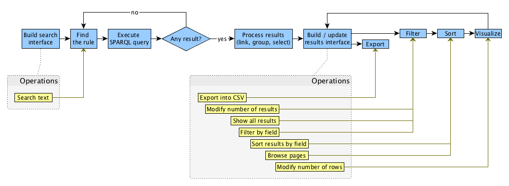
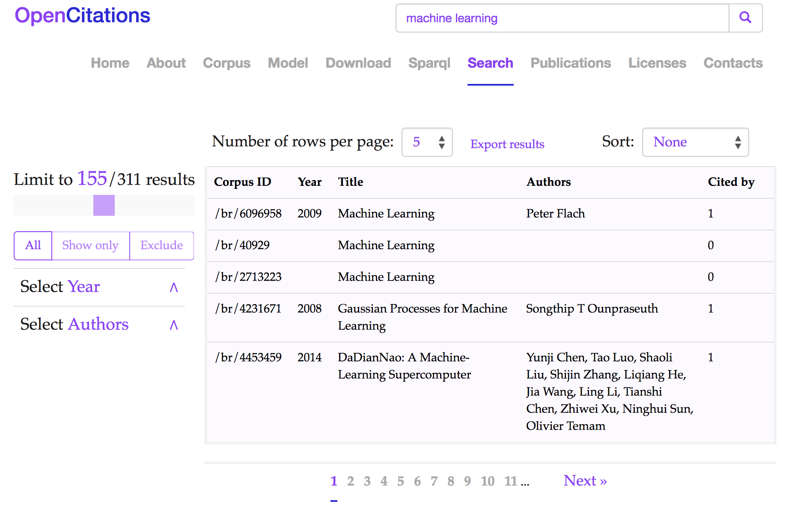

SPARQL is a very powerful query language, that can be used to retrieve data that follow specific patterns. In order to foster the availability of scholarly data on the Web, several project and institutions make available Web interfaces to their SPARQL endpoints so as to enable a user to search for information in the RDF datasets they expose. However, SPARQL is quite complex to learn, and usually it is fully accessible only to experts in Semantic Web technologies, remaining completely obscure to ordinary Web users. In this paper we introduce OSCAR, the OpenCitations RDF Search Application, which is a user-friendly search platform that can be used with any RDF triplestore providing a SPARQL endpoint. We present its main features and demonstrate how it can be adapted to work with different SPARQL endpoints containing scholarly data, vis OpenCitations, ScholarlyData and Wikidata. We conclude by discussing the results of a user testing session that reveal the usability of the OSCAR search interface when used to access information within the OpenCitations Corpus.
The amount of data available on the World Wide Web (the Web) keep increasing rapidly, and finding relevant information by searching the Web is a daily challenge. Traditional search techniques rely on a textual matching of words, and do not take into consideration the semantic information behind the textual content. The Semantic Web is an approach which tries to overcome these disadvantages by representing knowledge on the World Wide Web in a way that can be interpreted by machines. In particular, these data are store using RDF , which is a data model that enables one to express information in form of subject-predicate-object statements. Usually these RDF statements are stored in a particular kind of RDF database called a triplestore, which permits one to query these data by means of SPARQL , the query language for RDF data.
SPARQL is a very powerful query language, that can be used to look for data that follow specific patterns. When institutions such as the British Library and the British Museum, and projects such as Wikidata and D B pedia, want to make available their RDF data to the public, they usually provide a Web interface to a SPARQL endpoint of their triplestore, so as to enable users to search for particular information. However, this query language is quite complex to learn, and is normally usable only by experts in Semantic Web technologies, remaining completely obscure to ordinary Web users. The SPARQL service which we have developed for the OpenCitations Corpus is no exception.
The main work of OpenCitations is the creation and current expansion of the OpenCitations Corpus (OCC), an open repository of scholarly citation data made available under a Creative Commons public domain dedication, which provides in RDF accurate citation information (bibliographic references) harvested from the scholarly literature. The whole OCC is available for querying via its SPARQL endpoint, but it did not hitherto have a query interface that would permit ordinary Web users to undertake free text queries to search and explore OCC data.
In order to address this issue, we have developed an application that can be reused in different contexts for any type of RDF data, not just scholarly RDF data. This is OSCAR, the OpenCitations RDF Search Application, which is a user-friendly search platform that can be used with any RDF triplestore providing a SPARQL endpoint. OSCAR provides a configurable mechanism that allows one to query a triplestore by means of a free-text string, while in the background one or more SPARQL queries are actually executed. The involvement of experts in Semantic Web technologies remains crucial. However their involvement is reduced to an initial once-for-all-time configuration of the system to work with a particular triplestore, by customizing the script that provides the text-search interface and enables users to filter the returned results by means of appropriate facets and values.
In this paper we introduce OSCAR, the OpenCitations RDF Search Application. In particular, we present its main features and the most significative parts of its configuration file. In order to show how it can be adapted to work with different SPARQL endpoints, we provide three distinct configuration files which implement free-text query interfaces over the SPARQL endpoints of the OpenCitations Corpus, ScholarlyData and Wikidata , respectively. In addition, we report the results of a user testing session in order to understand the perceived usability of one of the aforementioned implementations, namely that working with the OpenCitations Corpus.
The rest of this paper is organized as follows. In we describe some of the most important existing SPARQL-based searching tools. In , we describe OSCAR and discuss its model definition and architectural form. In , we demonstrate its reusability in different contexts, while, in , we assess the usability of the search interface of this application when querying the OpenCitations Corpus. Finally, in , we conclude the paper and sketch out some future developments.
In the past, several projects that customize SPARQL queries according to user needs have been released. They can be classified into two categories.
On the one hand, there are the tools that generate and apply SPARQL queries starting from a free text search input, hiding the complexities of the SPARQL query behind a simple and familiar-looking search interface. We say that these interfaces are unaware-user tools, since they permit users to make textual queries without needing to understand the complexity of the languages used for storing and querying the data.
Scholia is a tool which lay in this category. It is a Web application to expose scientific bibliographic information through Wikidata. In particular, its Web service creates on-the-fly scholarly profiles for researchers, organizations, journals, publishers, individual scholarly works, and research topics, by querying the SPARQL-based Wikidata Query Service. A search field on the front page of Wikidata permits a user to look for a particular name and displays its data by means of well-structured visual interfaces.
Another tool of this type is BioCarian . It is an efficient and user-friendly search engine for performing exploratory searches on biological databases, providing an interface for SPARQL queries over RDF triplestores, and providing a graphical interface for the results based on facets. It allows complex queries to be constructed, and has additional features like filtering and ranking the results according to user-selected facet values.
OSCAR is, of course, one of this category of tools.
On the other hand, there are tools which aims at helping the user to build a SPARQL query by using specific visual constructs that mimic the various operations made available by SPARQL (filters, values selections, etc.). In this case, the users are very aware that they are using Semantic Web technologies, and that the function of the tools is only to be a support for guiding the user in creating the particular query of interest. These tools are grouped under the label aware-user tools.
Within this category, we have the Wikidata Query Service (WDQS), which is a Web interface that enable the creation of a SPARQL query by writing the actual label associated to each item and property. instead of employing the URL customarily used for identifying it. In addition, it makes available several visualisation interfaces for the results, from a simple table to very complex diagrams and graphs.
Along the same lines is the Visual SPARQL Builder (VSB), a tool which allows users to create and run SPARQL queries with a browser's graphical interface . While WDQS exposes the SPARQL query to the user, VSB hides it entirely behind blocks which explicitly represent all the SPARQL constructs, including filters. Upon execution, the visual queries are translated to SPARQL code, which is made accessible to the user, and the results are shown in structured tables.
OSCAR, the OpenCitations RDF Search Application, is an open source stand-alone javascript tool which can be embedded in a Webpage so as to provide a human-friendly interface for searching for data within RDF triplestores by means of SPARQL queries. It is possible to configure OSCAR to work with a particular endpoint by configuring a particular JSON document, which specifies how the SPARQL queries are sent to that endpoint, and how the returned query results should be visualized, according to the predefined tabular view that OSCAR provides. The source code and documentation for OSCAR are available on GitHub at https://github.com/ivanhb/OSCAR.
OSCAR has been developed according to meet the following requirements:
it must enable a free text search, such as iscommon to Web search engines;
it must permit filtering operations on the result set, on one or more of the result fields presented in the tabular results interface, and these operations must be applied dynamically and handled without any further querying of the triplestore;
its interface, functionalities and queries must be customizable according to the user needs;
it must, although originally developed to work with the OpenCitations SPARQL endpoint, be easily configured to work with any other RDF triplestore, and must also be easily integrated as a new module within that system's Website.
In the following subsections we describe the general architecture of the OSCAR system.
All the functionalities implemented by OSCAR are executed in the browser (client side), so as to make it easily reusable in different contexts and with different Web sites without the need of handling specific programming languages for running the back-end scripts. In particular, OSCAR is defined by three files:
search.js, which is the main core of the tool, handling all its behavior and define its model;
search-conf.js, which is the configuration file that defines all the parameters and customisation used by the tool to access data within a particular triplestore;
search.css, which is a stylesheet that defines the layout and other stylistic aspects of its user interface.
All these files need first to be imported within an HTML page that will provide the user with the text query interface. In addition, a skeleton HTML snippet should be included in such page, that will be populated with the result of such a search operation. This snippet is defined as follows:
<div id="search" class="search">
<div id="search_extra" class="search-extra"></div>
<div id="search_header" class="search-header">
<div id="rows_per_page"></div>
<div id="sort_results"></div>
</div>
<div id="search_body" class="search-body">
<div id="search_filters" class="search-filters">
<div id="limit_results"></div>
<div id="filter_btns"></div>
<div id="filter_values_list"></div>
</div>
<div id="search_results" class="search-results"></div>
</div>
</div>
The skeleton layout of this OSCAR results interface is composed by three main sections, defined by specific div elements: the section extra (@id = search_extra), the section header (@id = search_header), and the section body (@id = search_body).
The extra section can be used for applying additional functionalities and operations on the results of a search operation. Currently, it includes a mechanism for exporting the results shown as a CSV file. The header section contains components that allow one to modify the table of results from a visual perspective – e.g. by specifying the maximum number of rows to visualize per page, and by sorting the results according to a specific column or field. Finally, the body section is where the results are actually shown. It contains a table populated with the results obtained from the query execution, and a series of filters that enable a user to refine the results, so as to keep or excluding specific values.
The organisation of the structure of the aforementioned sections (and of all the subsections they contain) can be customized according to particular needs. In particular, one can decide which components are to be included within or excluded from the results Web page by keeping within that Web page the relevant HTML fragment, or omitting it. Furthermore, while OSCAR provide a set of basic layout rules for all the components, they can be freely customized so as to align them with the particular style required by the Web site under consideration.
The workflow implemented by OSCAR is described in , where we introduce all the operations that OSCAR enables, and the various steps it runs as consequence of such operations. The process starts with the generation of the search interface, which is the mechanism used to permit someone to input a textual query within in the text search box provided by the interface.

When a query is run (by pressing the enter
key or by clicking on the lens provided in the interface to the right of the free-text field), OSCAR determines which SPARQL query it has to execute according to provide results to match the particular textual input specified. As described in more detail in , the configuration file allows one to specify a sequence of rules, each defining a SPARQL queryand a particular regular expression. OSCAR iterates each rule as appear in sequence, and it run the related SPARQL query only if the input text matches the regular expression specified in the rule under consideration. If no results are returned by that particular SPARQL query, OSCAR iterates to the next rule and its associated SPARQL query until a result is returned, or until no result at all is found.
Once a result is returned, three additional operations are executed. First, OSCAR checks if some fields returned in the result table actually represent URL links for values of other fields – as specified in the configuration file – and, if that is the case, it creates explicit links in the resulting Web page. For instance, if we consider a simple two-column table where each row describes the title of an article and the URL from which one can retrieve its full metadata, then OSCAR can be configured to show the article title as a clickable link (incorporating the related URL that would otherwise have been specified in the second column) that allows one to go to the descriptive page for that article.
OSCAR then performs all the grouping operations indicated in the configuration file. This operation allows one to group rows in the result set according to a particular field, where all the other fields of the rows under consideration contain the same values. For instance, if we extend the two-column table mentioned above with an additional field for expressing author names, in the case in which a certain article has more than one author, the SPARQL-endpoint would return several rows (one for each author of the article), each repeating the title and the article URL in the first two fields and listing one of its authors in the third field. This makes for uncomfortable reading of the table. The grouping operation performed by OSCAR allows us to group all these authors into one 'author' cell in the third column, so as to provide just one row per article in the result table.
Finally, OSCAR selects a subset of the fields returned by the SPARQL endpoint to display in the Web page, according to the specification given within the configuration file. For instance, using the example given above, at this phase of the operation we can exclude the second column depicting the URLs of the articles, since those URL have already been incorporated into the clickable links added to the article titles in the first column.
All the data obtained as consequence of the application of aforementioned operations are initialized and stored internally in four different forms, called native data, filtered data, sorted data and visualized data respectively. Native data are the complete original result-set after the execution of the aforementioned operations. Filtered data are the subset of the native data after the application – brought about by a user interacting with the OSCAR interface – of filtering operations upon them (e.g. to show only the articles published in 2016). Sorted data are the subset of the filtered data after the execution – again brought about by a user interacting with the OSCAR interface – of sorting operations (e.g. sorting the rows in descendent order according to the number of citations that the articles have received). Finally, visualized data are the subset of the sorted data that are displayed in the Web page (for example, the first twenty results), while the others are hidden behind a pagination mechanism so as to avoid to fill up the entire page with all the results. It is worth mentioning that, in the initialisation phase, before filtering and sorting, all the 'filtered' and 'sorted' data are equivalent to the native data, while the visualized results (i.e. those actually shown in the Webpage) are a subset of the sorted data initially created using the display parameters specified in the configuration file. The filtered and sorted data are then subsequently modified as consequence of the filtering and sorting operations undertaken by the use using the OSCAR interface, as described above.
Once all the various data are initialized, OSCAR builds the layout components introduced at , and thus enables the user to interact with the results by executing certain type of operations on the data – i.e. exporting, filtering, sorting and visualizing, briefly introduced above. All the aforementioned operations, with the exception of the exporting operation, result in updating the user interface, which shows only the new subset of visualized data obtained as consequence of each operation, as summarized in .
| Step | Operation | Data modified | Description |
|---|---|---|---|
|
Export |
Export into a CSV file |
Sorted data |
The sorted data are exported into a CSV file. |
|
Filter |
Show all results |
Filtered data |
The filtered data are reset to the native data. |
|
Filter |
Modify number of results |
Filtered data |
Reduce the filtered data to a specified number of rows. |
|
Filter |
Filter by field |
Filtered data |
Exclude or show only the filtered data equal to some specific values of a certain field. |
|
Sort |
Sort results by field |
Filtered data |
Sort (in ascending or descending order) all the filtered data according to the value of a particular field. |
|
Visualize |
Browse pages |
Visualized data |
Show the visualized data, organized into pages, page by page. |
|
Visualize |
Increase / decrease rows |
Visualized data |
Increase or decrease the number of visualized data row shown at any one time in the Web page. |
OSCAR offers a flexible way for customizing its behaviour according to different needs. In particular, an adopter has to modify a particular configuration file (search-conf.js, which contains a JSON object) so as to customize the tool – as illustrated in the documentation of the tool available on the GitHub repository. An excerpt of an exemplar configuration file is shown as follows:
{
"sparql_endpoint": "https://w3id.org/oc/sparql",
"prefixes": [
{ "prefix":"cito", "iri":"http://purl.org/spar/cito/" },
{ "prefix":"dcterms", "iri":"http://purl.org/dc/terms/" },
...
],
"rules": [
{
"name":"doi",
"category": "document",
"regex":"(10.\\d{4,9}\/[-._;()/:A-Za-z0-9][^\\s]+)",
"query": "SELECT DISTINCT ?iri ?short_iri ..."
},
...
],
"categories": [
{
"name": "document",
"fields": [
{
"value":"short_iri", "title": "Corpus ID",
"column_width":"15%", "type": "text",
"sort": { "value": true },
"link": { "field":"iri", "prefix":"" }
},
...
]
},
...
]
}
This configuration file allows one to specify the SPARQL endpoint to connect with for running SPARQL queries, and the SPARQL prefixes to use in the various queries. In addition, it enables the specification of the rules for executing the appropriate SPARQL queries. In particular, each rule includes a name, an activator (i.e. a regular expression shaping a particular string pattern), a category describing the types of data that will be collected (see below), and the SPARQL query to be executed if the activator matches with the free-text search query provided by the user.
Finally, the configuration files also comprises the categories, i.e. particular descriptive operation that are applied to the results returned by a SPARQL query defined in a rule. In particular, each category includes a name and a set of SPARQL query SELECT variables. Each of these variables is accompanied by information about its presentation mechanisms (e.g. the label to use for presenting it in the Web page, and the width of the table column in which to put the related values) and about other filtering operations that can be applied to the values associated to that variable (e.g. the operations link, group and select described in ).
In order to demonstrate the flexibility that OSCAR offers in terms of its customizability and adaptability to a particular triplestore, we have developed three configuration files that provide free-text search interfaces to three different RDF datasets (each with a separate SPARQL endpoint): the OpenCitations Corpus, Scholarly Data and Wikidata.
The OpenCitations Corpus (OCC, http://opencitations.net)
is an open repository of scholarly citation data bibliographic information we we have developed, which has been the main target for the development of OSCAR. The OCC triplestore contains such open scholarly citation and bibliographic data. The OSCAR search interface for the OpenCitations Corpus can be seen and used at see http://opencitations.net/search. The use of OSCAR in this context concerns the search for two basic entities included in the OCC: documents (bibliographic resources) and authors. Currently, the free-text search allows the recognition of three different types of input:: DOIs, ORCIDs, and any other textual string which can refer to a document or identify an author. In , we depict a screenshot of OSCAR after the execution of a free text search using the string machine learning
.

machine learning.
A similar instantiation has been made for the SPARQL endpoint provided by Scholarly Data (http://www.scholarlydata.org) . Scholarly Data provides an RDF dataset of the papers, people, organisations and events related to Web and Semantic Web academic conferences. The current version of the project has a SPARQL endpoint, but it does not include a free-text search interface for discovery of the entities included in the dataset. We have created an ad hoc configuration file for OSCAR so as to enable such search operation on the Scholarly Data triplestore. The Web interface for OSCAR searches over the SPARQL endpoint for Scholarly Data is available at https://rawgit.com/ivanhb/OSCAR/master/example/scholarlydata.html.
Finally, we have also prepared a configuration files to enable free-text searches within Wikidata (https://www.wikidata.org) . Wikidata is a free open knowledge base which acts as a central store for the structured data of Wikimedia Foundation projects including Wikipedia, and of other sites and services. Wikidata offer a SPARQL query service and already has a powerful Web graphical user interface for facilitating the users to construct SPARQL queries, as mentioned above. Our OSCAR interface to the Wikidata SPARQL endpoint is thus for demonstration purposes, rather than providing new functionality for Wikidata users. While Wikidata contains a wide variety of information, for the customisation of OSCAR we have decided to limit the range of data to be searched to bibliographic entities within the scholarly domain. The configuration file thus includes rules for detecting DOIs, ORCIDs and free textual inputs, and classifies the information returned according to two categories: documents and authors, as done for the OSCAR search interface over the OpenCitations Corpus. The Web interface for OSCAR searches over the SPARQL endpoint of Wikidata is available at https://rawgit.com/ivanhb/OSCAR/master/example/wikidata.html.
In order to measure the perceived usability of the OSCAR search interface over the OpenCitations Corpus data, we involved five subjects in a user testing session. The test was organized as a Discount Usability Test (DUT): a low-cost test with few participants. Past studies have demonstrated that even when involving only five people, such a test can find up to 80% of the main problems of a system. In the next subsections, we first discuss the settings of our tests and then we show the outcomes. All the material and outcomes of the test are available at .
We asked five different subjects to perform 5 unsupervised tasks during the month of January 2018. All the subjects were volunteers who responded to personal e-mails. At the very beginning of the user testing session, we provided the subjects with a quick description of OSCAR and its main features, and then we just left the testers to execute their tasks individually, without observing them during the performance of these tasks. The tasks we asked them to undertake are as follows:
Search the corpus with the Digital Object Identifier (DOI) 10.1002/cncr.28414
, and write down the title of the document.
Search for the author with an ORCID 0000-0001-5506-523X
, and write down the author's name.
Search for all the documents with matches to the term chemical classification system
, and sort the results obtained according to the year of publication in a descendent order. Write down the Corpus ID
value of the document in the first row in the table of results.
Keep in the result table only the documents that have Dae-Jong Song
as one of their authors. Write down the number of rows in the table.
Look for the 10 most cited documents published in 2015 and 2016 that match with the string clinical review
. Export and download the results obtained in the table, and copy and paste the content of this downloaded CSV file.
After these tasks, we asked the participants to fill up two questionaries and answer some questions according to their experience. The first questionary is a SUS (System Usability Scale) questionnaire , while the second one contained four questions for reporting the user experience while using OSCAR to accomplish the tasks, i.e.:
How effectively did the tool support you completing the previous tasks?
What were the most useful features of the tool that helped you accomplishing your tasks?
What were the main weaknesses exhibited by the tool while executing your tasks?
Can you think of other additional features that would have helped you accomplish your tasks?
Finally, we asked all the participants for some background information, including their ages and their current work positions.
The five people involved – one professor, two post-doctoral researchers, one Ph.D. student and one master-degree student (all from Italy) – have responded positively to our invitation, and we received five full feedback forms concerning their experience in using of OSCAR to explore the OpenCitations Corpus, according to the aforementioned tasks. The first four tasks have been successfully executed by all the subjects. The final task was the most complex and had resulted in some issues by two subjects – who either forgot to take into account only the papers published in 2015 and 2016 or did not return the ten most cited papers overall. In fact, we received 3 out 5 correct answers, as shown in .
| Subject | Task 1 | Task 2 | Task 3 | Task 4 | Task 5 |
|---|---|---|---|---|---|
|
1 |
✔ |
✔ |
✔ |
✔ |
✔ |
|
2 |
✔ |
✔ |
✔ |
✔ |
✔ |
|
3 |
✔ |
✔ |
✔ |
✔ |
✕ |
|
4 |
✔ |
✔ |
✔ |
✔ |
✕ |
|
5 |
✔ |
✔ |
✔ |
✔ |
✔ |
|
Total (correct/all) |
5/5 |
5/5 |
5/5 |
5/5 |
3/5 |
The usability score for OSCAR under these circumstances was computed using the System Usability Scale (SUS) , a well-known questionnaire used for the perception of the usability of a system. This has the advantage of being technology independent (it has been tested on hardware, software, Web sites, etc.) and it is reliable even with a very small sample size. In addition to the main SUS scale, we also were interested in examining the sub-scales of pure Usability and pure Learnability of the system, as proposed recently by Lewis and Sauro .
The mean SUS score for OSCAR was 87 (within a range from 0 to 100), surpassing with a high margin the target score of 68 to demonstrate a good level of usability . The mean values for the SUS sub-scales Usability and Learnability were 84.37 and 97.5 respectively. This result was expected, since the operations provided by OSCAR are close to the common operations of any either generic (e.g. Google) or domain-specific (e.g. Scopus) search engine applications
| Category | Positive | Negative |
|---|---|---|
|
Filters |
4 |
1 |
|
Operation behaviour |
3 |
3 |
|
User's satisfaction |
3 |
2 |
|
Interface |
2 |
2 |
Axial coding of the personal comments expressed in the second questionnaire by all the five participants revealed some widely perceived issues, as shown in . We generally received a large number of positive comments regarding the variety of the filters and of the operations (e.g. search and sort) that can be applied on the data. A particular praise concerned that the tool detected the corresponding query intent automatically and returned different results (either documents or authors) according to the input specified in the search box. Instead, the main weakness identified lied mainly in the ambiguity of part of OSCAR interface and of the show all
operation, and in its efficiency, since often it spent several seconds before returning the result to a query. While this latter aspect is crucial, it was mainly due to the bad performances that current (very limited) OpenCitations infrastructure hosting the SPARQL endpoint had. However, this specific issue should be addressed once we finish to migrate the OpenCitations Corpus to the new infrastructure, which includes a powerful physical server – i.e. a Dell PowerEdge R730xd with two processors Intel Xeon E5-2620 2.1GHz, and 512GB of RAM.
In this paper we introduced OSCAR, the OpenCitations RDF Search Application, a user-friendly searching tool for RDF triplestores that can be queried by means of a SPARQL endpoint. In particular, we have presented its main features and we have shown how it can be adapted to work with different SPARQL endpoints, including the OpenCitations Corpus, Scholarly Data and Wikidata. Finally, we have discuss the outcomes of user testing undertaken in order to understand the perceived usability of the OSCAR search interface when used to interrogate the OpenCitations Corpus.
We are currently working on some extensions of OSCAR, particularly an advanced search interface, so as to permit complex combinations of field-oriented queries by means of logical connections (OR, AND, etc.). In addition, we are working on a related tool, named LUCINDA, to browse the resources inside a triplestore. In particular, LUCINDA will have the ability to visualize the resources attributes, providing detailed information about bibliographic resources such as journal names, page numbers, and additional identifiers. As with OSCAR, this new browsing tool will be integrated within the OpenCitations Web site so as to provide human-readable descriptions of the OpenCitations Corpus entities, and will be equally applicable for implementation over the triplestores of other RDF data repositories.
We commend the use of OSCAR, which is a fully open source application provided by OpenCitations for general community use, to permit free-text queries over the SPARQL endpoints of other triplestores. We would be grateful to receive feedback (to contact@opencitations.net) from its users.
We gratefully acknowledge the financial support provided to us by the Alfred P.Sloan Foundation for the OpenCitations Extension Project (grant number G‐2017‐9800).
Nielsen, F., Mietchen, D., Willighagen, E. (2017). Scholia, scientometrics and Wikidata. In Proceedings of the Satellite Events of the 14th Extended Semantic Web Conference (ESWC 2017): 237-259. DOI: https://doi.org/10.1007/978-3-319-70407-4_36
Silvio Peroni, Alexander Dutton, Tanya Gray, David Shotton (2015). Setting our bibliographic references free: towards open citation data. Journal of Documentation, 71 (2): 253-277. DOI: http://dx.doi.org/10.1108/JD-12-2013-0166; OA at http://speroni.web.cs.unibo.it/publications/peroni-2015-setting-bibliographic-references.pdf
Nuzzolese, A. G., Gentile, A. L., Presutti, V., Gangemi, A. (2016). Conference Linked Data: The ScholarlyData Project. In: Proceedings of the 15th International Semantic Web Conference (ISWC 2016): 150-158. DOI: https://doi.org/10.1007/978-3-319-46547-0_16
Zaki, N., Tennakoon, C. (2017). BioCarian: search engine for exploratory searches in heterogeneous biological databases. BMC bioinformatics 18: 435. DOI: https://doi.org/10.1186/s12859-017-1840-4
Nielsen, J. (2000). Why You Only Need to Test with 5 Users. https://www.nngroup.com/articles/why-you-only-need-to-test-with-5-users/ (last visited 30 January 2018)
Nielsen, J. (2009). Discount Usability: 20 Years. https://www.nngroup.com/articles/discount-usability-20-years/ (last visited 30 January 2018)
Sauro, J. (2011). A Practical Guide to the System Usability Scale: Background, Benchmarks & Best Practices. ISBN: 978-1461062707
Cyganiak, R., Wood, D., Lanthaler, M. (2014). RDF 1.1 Concepts and Abstract Syntax. W3C Recommendation 25 February 2014. https://www.w3.org/TR/rdf11-concepts/
Harris, S., Seaborne, A. (2013). SPARQL 1.1 Query Language. W3C Recommendation 21 March 2013. https://www.w3.org/TR/sparql11-query/
Vrandecic, D., Krötzsch, M. (2014). Wikidata: a free collaborative knowledgebase. Communications of the ACM, 57 (10): 78-85. DOI: http://doi.acm.org/10.1145/2629489
Peroni, S., Shotton, D., Vitali, F. (2017). One Year of the OpenCitations Corpus - Releasing RDF-Based Scholarly Citation Data into the Public Domain. In Proceedings of the 16th International Semantic Web Conference (ISWC 2017): 184-192. DOI: https://doi.org/10.1007/978-3-319-68204-4_19
Hiebi, I., Peroni, S., Shotton, D. (2018). Material and outcomes of the OSCAR user testing session. Figshare. DOI: https://doi.org/10.6084/m9.figshare.5849724
Lewis, J. R., Sauro, J. (2009). The Factor Structure of the System Usability Scale. In Proceedings of the 1st International Conference on Human Centered Design (HCD09). DOI: https://doi.org/10.1007/978-3-642-02806-9_12
Strauss, A. Corbin, J. (1998). Basics of Qualitative Research Techniques and Procedures for Developing Grounded Theory (2nd edition). Sage Publications: London. ISBN: 978-0803959408